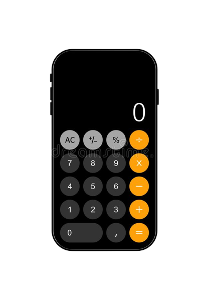

Sua ferramenta de fazer cálculos
Calculadora Online
Calculadoras são essencias para nos ajudar a lidar com números de uma maneira rápida e fácil.
E foi pensando nisso, que a Calculator desenvolveu uma moderna calculadora online!
Click no botão abaixo para utilizá-la!
